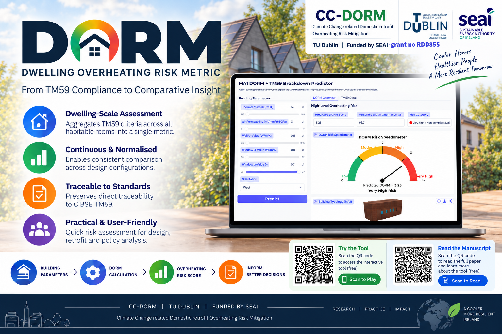

Explore dwelling
overheating risk.
How do building fabric and orientation affect overheating? Use the Dwelling Overheating Risk Metric (DORM) predictor to compare design choices for the MA1 dwelling prototype.

Change one choice. Compare the risk.
1. Set a baseline
Choose the building parameters and orientation, then press Predict. Record the DORM score and risk category.
2. Test a design change
Change thermal mass, air permeability, wall or window U-value, glazing g-value, or orientation. Keep the other inputs fixed and press Predict again.
3. Explore the detail
Compare the DORM Overview and TM59 Detail tabs. Try each orientation with the same fabric choices to explore its effect.
The live tool is hosted on Hugging Face and runs here within this page. It may take a moment to start. If it does not appear, open the tool directly ↗.
About this beta: This predictor is for the MA1 dwelling prototype and the parameter ranges available in the app. Use its outputs to explore and compare configurations within that scope. Its predictions do not replace a project-specific dynamic thermal simulation or formal TM59 assessment. Air permeability at 50 Pa is a fabric airtightness measure; it is not the room’s natural ventilation rate.